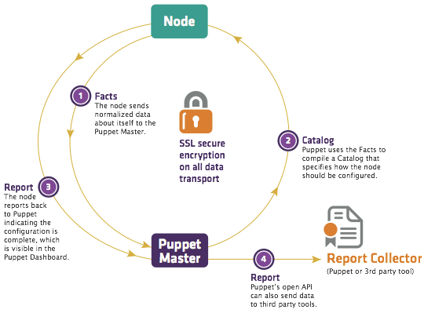

Disclaimer
- We will skip the installation, configuration of Puppet and SaltStack and some advanced (functions + implementations) and stick to getting a taste of what things are Puppet and SaltStack capable of doing.
- We will also skip some other things which I will skip mentioning until the end.
- I haven't worked on these technologies since an year and a half :)
Managing your
servers
"all kind of machines"
with
Puppet & SaltStack
Demo Setup
[minion1 vm] -- Ubuntu 14.04
/
/
/
[ master vm ] +-+-/
Ubuntu 14.04 +-+-\
\
\
\
[minion2 vm] -- Fedora 21
Introduction to the Problem 1
Ensure that n number of machines have X* installed.
* no pun intended
Possible solutions
- Copy whole hard disks/udpcast over PXE/Norton Ghost/disk cloning solutions
- SSH/PowerShell(?) in a loop
- Manually install on all machines
- Puppet ???
- SaltStack ???
- Any other solutions ???
ssh in a loop
for machine in $(cat machine_list)
do
echo "Installing X on $machine..."
ssh $machine the_great_package_manager install X
echo "Done installing X on $machine"
echo "Now moving to next!"
done
for machine in $(cat machine_list)
do
echo "Installing X on $machine..."
ssh $machine the_great_package_manager install X
echo "Done installing X on $machine"
echo "Now moving to next!"
done
Scaling ssh-in-a-loop
- Handle and log errors while installing
- Add support for yum, apt-get, MSI and so on...
- Handle non-SSH-supporting OS
- Manage ssh-keys, non-standard ports and all your "security" workarounds
- Add support for different tasks as they are realized by your manager/client
Puppet and how it works
 From The Architecture of Open Source Applications bookHow to use Puppet ?
- Write resource definitions in Puppet's Domain-Specific-Language
- Put your resources into node-specific manifests
- Validate the manifests
- Let Puppet worry about how to get things done.
#inside your modules
class hamareResources {
resource_type_x { $title :
attribute => $value
}
resource_type_y { $title :
attribute => $value
}
.
.
.
}
#and then in the node manifest
node "machine.example.net" {
include hamareResources
}
Managing software resources
package { "software_name" :
ensure => present,
}
A software is managed in the form of a package. Using the 'package' resource, we can manage a software's state -- present, absent, specific version, latest
What if the software isn't in .rpm or .deb?
Package it!
Managing service resources
A service is any software managed by the systemctl, SysV or other such utility which has interfaces available for start/stop/reload/restart functionalities.
service { "service_name" :
ensure => running,
enabled => true,
}
Managing service resources
Service name may differ based on OS version/flavour.
So you can use:
service {
"cron" :
ensure => running ;
"crond" :
ensure => running,
}
OR
case $operatingsystem {
ubuntu { $service_name = 'cron' }
fedora { $service_name = 'crond' }
}
service { $service_name :
ensure => running;
}
Managing file resources
A file is a file is a file.
file { "/absolute/path/to/file_on_the_machine" :
ensure => present, #directory/file/absent/present/link
mode => '0700', #permissions in numeric mode
owner => user, #owner name
group => group, #group name
content => "INLINE STRING CONTENT" or template(),
source => "puppet://link/to/file/relative/to/the/module" #This file should exist inside the modules/module_name/files directory on the Puppetmaster
}
You can read more about template function.
You can choose to make a backup of the file if it is being replaced using the backup attribute. The backup can be either on the agent OR on the Puppet Master in a filebucket
Managing file resources
A directory is also a file!
file { "/absolute/path/to/dir_on_the_machine" :
ensure => present, #directory/file/absent/present/link
mode => '0700', #permissions in numeric mode
owner => user, #owner name
group => group, #group name
recurse => true,
source => "puppet://link/to/dir/relative/to/the/module" #This file should exist inside the modules/module_name/files directory on the Puppetmaster
}
You can choose to manage a directory recursively (sub-directories + inside files will be also managed) and you can choose what happens to files which are on the machine but not present on the Puppet Master using the purge attribute.
Running a command on your machines
exec { 'binary --with --args'
path => [ "/paths",
"/to",
"/search",
"/the",
"/binary",
]
}
Managing more things with Puppet
- cron jobs
- users
- groups
- ssh keys
- more
- ...and many more things thanks to the Puppet Forge!
- ...and also Windows machines!
Managing things with Puppet -- in a better way
- Use if-else, switch-case, unless, selectors and custom variables
- Combine group of related resources in classes
- Combine related classes in modules
- Use facts from facter
- Use subscribe and notify relationships between resources
- Use before and after ordering between resources (if you absolutely have to)
Introduction to the Problem 2
Check the date and time on all machines
Possible solutions
- SSH/PowerShell(?) in a loop
- Puppet ???
- SaltStack ???
Using Puppet to solve Problem2
exec { 'date' :
path => ['/usr/bin',
'/bin',
]
}
- Will repeat again, and again and again until you remove it from the manifest.
- Not easy to figure out whether the command has run on a machine or not.
- Not easy to store and parse the output
exec { 'date' :
path => ['/usr/bin',
'/bin',
]
}
SaltStack and how it works

From SaltStack docs
How to use SaltStack?
- Setup Salt Master and SaltStack minions on your machines that you wish to control
- Introduce them to each other
- Run commands from the Salt Master!
Checking date and time on all machines
Very simple task but difficult to do when you have numerous machines with heterogeneous configuration
salt {target_machines} cmd.run "date"
Checking whether a string exists in a file on machines
salt {target_machines} file.contains {filename} "string"
List network interfaces
salt {target_machines} network.interfaces
Pull a specific file from all machines
to a central location
salt {target_machines} cp.push {absolute_path_to_file}
Will copy files to the cache_dir on your master.
Doing more things with SaltStack
- Use globs and grains on the commandline
- Use pillars
- Use the reactor system
- Use the Python API
- Use the REST/WebSockets/XMPP api using the salt-api daemon
The skipped things
you should know
- mcollective in Puppet.
- salt for configuration management.
- Language! Ruby and Python differ wildly not only in syntax but also in philosophies -- and so do Puppet and SaltStack!
Use cases
- Install emacs on all machines. -- Both Puppet and Salt can do it.
- Make sure that .ssh directory exists for each user. -- Puppet is the best
- Restart X server on all machines. -- Salt is the best.
- Reload X server on all machines after putting a change in the configuration file. -- Puppet is the best
- Add a new virtualhost to Apache configuration. -- Puppet is the best. Checkout Apache module by PuppetLabs
Use cases - 2
- Check if fail2ban is installed. -- Salt will check. Puppet will check and install (ENSURE)
- Copy a file to all machines. -- Puppet will copy and ensure it remains so. Salt will just copy and forget.
- Check the contents of a file and on the basis of it perform P or Q action. -- can be done using facter and if-else blocks in Puppet or simply Salt.
About me
Just another Linux user who:
- ...currently works at the GPU Centre of Excellence, IIT Bombay
- ...did a startup with Sachin here with mixed results.
- ...picked up Puppet and SaltStack while working as a DevOps in SocialTwist and Intellecap
- ...and attempted to create a fork of vim koans called Puppet koans
- ...has his website at fortyplustwo.net
This presentation was made using reveal.js